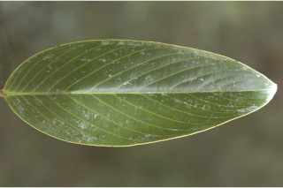
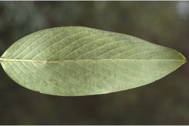
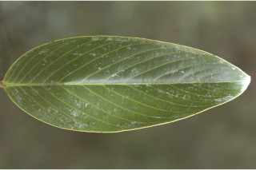
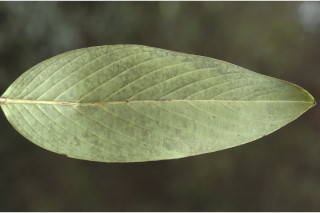
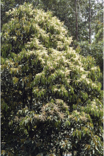
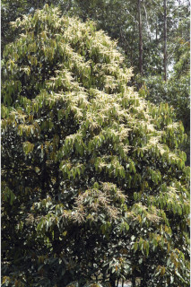
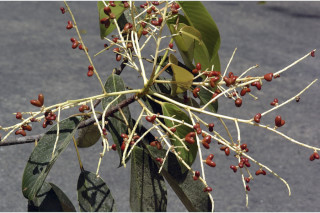
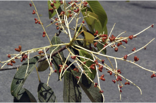

Large trees, up to 30 m tall.
30 ಮೀ ಎತ್ತರದವರೆಗೆ ಬೃಹತ್ ಮರಗಳು.
30 മീറ്റര് വരെ ഉയരത്തില് വളരുന്ന, വന്മരങ്ങള്.
பெரிய மரம் 30 மீ. உயரம் வரை வளரக்கூடியது
Bark smooth, brownish; blaze pinkish cream.
ತೊಗಟೆ ನಯವಾಗಿದ್ದು ಕಂದು ಬಣ್ಣ ಹೊಂದಿರುತ್ತದೆ;ಕಚ್ಚು ಮಾಡಿದ ಜಾಗ ನಸುಗೆಂಪು ಮಿಶ್ರಿತ ಕೆನೆ ಬಣ್ಣದವು.
തവിട്ട് നിറത്തിലുളള, മിനുസമാര്ന്ന പുറംതൊലി; വെട്ട്പാടിന് പിങ്ക്കലര്ന്ന ക്രീം നിറം.
மரத்தின் பட்டை வழுவழுப்பானது, ப்ரவுன் நிறம்; உள்பட்டை பிங்க் கலந்த கிரீம் நிறம்.
Branchlets stout, terete, glabrous with scars of fallen leaves and stipules.
ಕಿರುಕೊಂಬೆಗಳು ದೃಢವಾಗಿದ್ದು ದುಂಡಾಕಾರದಲ್ಲಿರುತ್ತವೆ. ಉದುರಿದ ಎಲೆಗಳ ಹಾಗೂ ಕಾವಿನೆಲೆಗಳ ಗುರುತುಗಳನ್ನು ಹೊಂದಿರುತ್ತವೆ.
ഇലകളും അനുപര്ണ്ണങ്ങളും കൊഴിഞ്ഞ അടയാളങ്ങളുളള, അരോമിലവും ഉരുുതും ദൃഢവുമായ ഉപശാഖകള്.
சிறிய நுனிக்கிளைகள் தடித்தவை, குறுக்குவெட்டுத் தோற்றத்தில் வளையமானது, உரோமங்களற்றது, இலை மற்றும் இலையடிச்செதில் விழுந்த வடு கொண்டது.
Leaves simple, alternate, spiral, clustered at twig ends, stipules large, to 2.5 cm long, lanceolate, caducous; petiole 2.5-4.5 cm long, swollen at both ends; lamina 10-18 x 4.5-8.5 cm elliptic-oblong to narrow-ovate, apex obtusely acute or short acuminate with folded, base rounded, coriaceous, shining above, glabrous; secondary_nerves 11 to 20 pairs, strong, nearly parallel, oblique to midrib; tertiary_nerves closely_horizontally_percurrent, slender.
ಎಲೆಗಳು ಸರಳವಾಗಿದ್ದು,ಪರ್ಯಾಯ ಹಾಗೂ ಸುತ್ತು ಜೋಡನಾ ವ್ಯವಸ್ಥೆಯಲ್ಲಿದ್ದು ಕುಡಿಕೊಂಬೆಗಳ ತುದಿಯಲ್ಲಿ ಗುಂಪಾಗಿರುತ್ತವೆ, ಕಾವಿನೆಲೆಗಳು ದೊಡ್ಡ ಗಾತ್ರದಲ್ಲಿದ್ದು 2.5 ಸೆಂ.ಮೀ ಉದ್ದ ಹೊಂದಿರುತ್ತವೆ ಹಾಗೂ ಭರ್ಜಿಯಾಕಾರದವುಗಳಾಗಿದ್ದು ಉದುರಿಹೋಗುವ ಸ್ವಭಾವದವು;ಎಲೆತೊಟ್ಟುಗಳ ಉದ್ದ2.5 ರಿಂದ 4.5 ಸೆಂ.ಮೀ ಇದ್ದು ಎರಡೂ ತುದಿಗಳಲ್ಲಿ ಬಾವುಗೊಂಡಿರುತ್ತವೆ;ಪತ್ರಗಳ ಗಾತ್ರ 10-18X 4.5-8.5 ಸೆಂ.ಮೀ ಅಂಡವೃತ್ತ-ಚತುರಸ್ರಾಕಾರದಿಂದ ಹಿಡಿದು ಸಂಕುಚಿತ ಅಂಡಾಕಾರದವರೆಗಿನ ಆಕಾರ ಹೊಂದಿದ್ದು, ಅಧಿಕಕೋನವುಳ್ಳ ಚೂಪುಳ್ಳ ಅಥವಾ ಮಡಚಿದ,ಚಿಕ್ಕದಾದ ಕ್ರಮೇಣ ಚೂಪಾಗುವ ಮಾದರಿಯ ತುದಿ ಹಾಗೂ ದುಂಡಾಕಾರದ ಬುಡವನ್ನು ಪತ್ರಗಳು ಹೊಂದಿರುತ್ತವೆ.ಪತ್ರಗಳು ಕಾಗದವ ನ್ನೋಲುವ ಮಾದರಿಯಲಿದ್ದು ರೋಮರಹಿತವಾಗಿರುತ್ತವೆ;ಎರಡನೇ ದರ್ಜೆಯ ನಾಳಗಳು ಧೃಢವಾದ 11 ರಿಂದ 20 ಜೋಡಿಗಳಿದ್ದು,ಬಹುಮಟ್ಟಿಗೆ ಸಮಾಂತರ ಹೊಂದಿದ್ದುಮಧ್ಯನಾಳಕ್ಕೆ ಓರೆಯಾಗಿರುತ್ತವೆ;ಮೂರನೇ ದರ್ಜೆಯ ನಾಳಗಳು ತೆಳುವಾಗಿದ್ದು, ಸಮೀಪವಾಗಿ ಅಡ್ಡವಾಗಿ ನಿರ್ಮಾಣಗೊಂಡಿದ್ದು ಎಲೆದಿಂಡಿಗೆ ಅಡ್ಡವಾಗಿ ಕೂಡುವಂತಹ ಮಾದರಿಯವು.
ഏകാന്തരക്രമത്തില്, സര്പ്പിളാകൃതിയില്, തുകളുടെ അറ്റത്ത് കൂട്ടമായി അടുക്കിയ ലഘുപത്രങ്ങള്, വലിയ (അനുപര്ണ്ണങ്ങള്), 2.5 സെ.മീ വരെ നീളം, കുന്താകാരം, വേഗം കൊഴിഞ്ഞ് പോകുന്നതാണ്; ഇലഞെട്ടിന് 2.5 സെ.മീ മുതല് 4.5 സെ.മീ വരെ നീളം, രറ്റത്തും വീര്ത്തിരിക്കുന്നു; പത്രഫലകത്തിന് 10 സെ.മീ മുതല് 18 സെ. മീ വരെ നീളവും 4.5 സെ. മീ മുതല് 8.5 സെ.മീ വരെ വീതിയും, ദീര്ഘവൃത്താകാരം-ആയതാകാരം മുതല് വീതികുറഞ്ഞ അണ്ഡാകാരമോ ആണ്, പത്രാഗ്രം കൂര്ത്തതോ മടക്കോടുകൂടിയ ചെറുവാലുള്ളതോ ആണ്, പത്രാധാരം വൃത്താകാരത്തില്, ചര്മ്മിലപ്രകൃതം, തിളങ്ങുന്ന മുകള്ഭാഗം, അരോമിലം; ദ്വിതീയ ഞരമ്പുകള് 11 മുതല് 20 വരെ ജോഡികള്, ദൃഢമായതും, ഏതാ് സമാന്തരമായി, മുഖ്യസിരയോട് ചരിഞ്ഞ് നില്ക്കുന്നതുമാണ്; ത്രിതീയ ഞരമ്പുകള് നേര്ത്തതും, അടുത്തുനില്ക്കുന്ന തിരശ്ചീന പെര്കറന്റും ആണ്.
இலைகள் தனித்தவை, மாற்றுஅடுக்கமானவை, சுழல் அமைப்பு, கிளைகளின் நுனியில் இலைகள் கூட்டமாக மற்றும் நெருக்கமாக காணப்படும், இலையடிச்செதில் பெரியது, 2.5 செ.மீ. வரை நீளமானது; ஈட்டி வடிவம், உதிரக்கூடியது; இலைக்காம்பு 2.5-4.5 செ.மீ., இலைக்காம்பின் இரண்டு நுனியிலும் உப்பியது; இலை அலகு 10-18 X 4.5-8.5 செ.மீ., நீள்வட்டம்-நீள்சதுரம் முதல் குறுகிய முட்டை வடிவம், அலகின் நுனி மழுங்கியதுடன் கூரியது அல்லது சிறிய அதிக்கூரியது மற்றும் மடிப்புகளுடையது, அலகின் தளம் வட்டமானது, கோரியேசியஸ், மேற்பரப்பில் பளபளப்பானது, கீழ்பரப்பு உரோமங்களற்றது; இரண்டாம் நிலை நரம்புகள் 11-20 ஜோடிகள், இணையானது; மூன்றாம் நிலை நரம்புகள் நெருக்கமானது மற்றும் இணையான பெர்க்கரண்ட், மெலிதானது.
Inflorescence terminal, panicled racemes; flowers small, white.
ಪುಷ್ಪಮಂಜರಿ ತುದಿಯಲ್ಲಿರುವ,ಕವಲೊಡೆದ ಮಧ್ಯಾಭಿಸರ ಮಾದರಿಯವು;ಹೂಗಳು ಗಾತ್ರದಲ್ಲಿ ಸಣ್ಣದಾಗಿದ್ದು,ಶ್ವೇತವರ್ಣ ಹೊಂದಿರುತ್ತವೆ
പൂങ്കുലകള് ഉച്ഛസ്ഥ പാനിക്കിള് റസീമുകളാണ്; പൂക്കള് ചെറുതും, വെളുത്തതുമാണ്.
தண்டின் நுனியில் அமைந்த பேனிக்கில்டு ரெசீம்ஸ்; மலர்கள் சிறியது, வெண்மை நிறமுடையது.
Capsule, red, 2 lobed; seeds 1 per lobe.
ಸಂಪುಟ ಫಲ ಕೆಂಪು ಬಣ್ಣ ಹೊಂದಿದ್ದು ಎರಡು ಹಾಲೆಗಳ ಸಮೇತವಿರುತ್ತದೆ; ಪ್ರತಿ ಹಾಲೆಯಲ್ಲಿ ಒಂದು ಬೀಜವಿರುತ್ತದೆ.
ര് ഭാഗങ്ങളുളള ചുവന്ന കായ; ഓരോഭാഗത്തും ഓരോ വിത്തുവീതം.
கேப்சூல், சிவப்பு நிறமுடையது, இரண்டு பகுதியுள்ள கேப்சூல், ஒவ்வொரு பகுதியிலும் ஓர் விதை கொண்டது.


 



 


 
